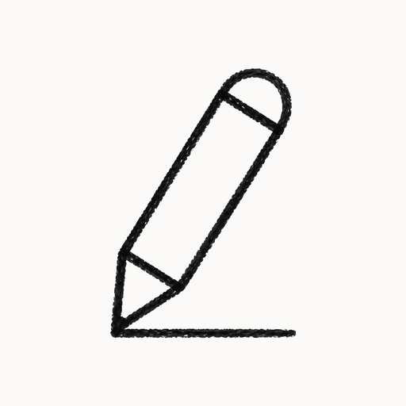
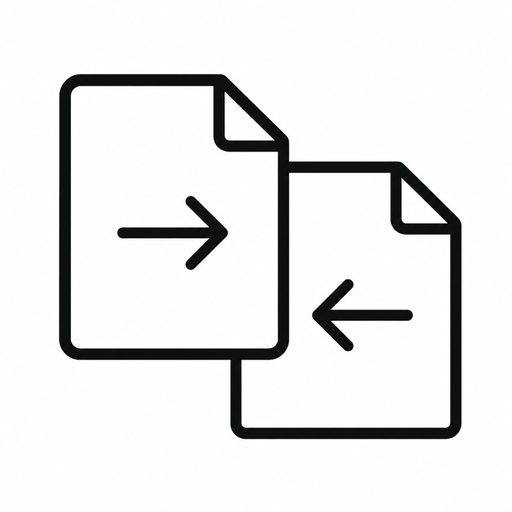
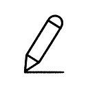

TauLeap
Mac apps and Chrome extensions
軽量で安全なツールをつくっています
Mac apps
Mac アプリ
TauBar
Gives your Mac a Windows-style taskbar. Work with each window on its own, with Chrome profile icons shown.
Mac を Windows 風のタスクバーで操作可能にします。ウィンドウ単位で操作できます。Chrome のプロファイルアイコンも表示します。

TauPad
Opens text files quickly in a light editor with tabs, encoding, and line endings.
テキストファイルをすばやく開き、タブや文字コード、改行コードを扱えます。

TauDiff
Compares two text files side by side so you can edit either pane and save.
テキストファイルを左右で比較し、そのまま編集・保存できます。
Chrome extensions
Chrome 拡張
GitHub Translate
Puts short Japanese labels beside github.com menus, tabs, and buttons.
github.com のメニューやタブの横に、短い日本語を並記します。
Pin Guard
Keeps Chrome pinned tabs from showing another site.
Chromeの固定タブが別サイトを表示しないようにピン留めします。

TauMemo
Opens a Chrome Side Panel memo that auto-saves on your device.
Chrome のサイドパネルでメモを取り、端末内に自動保存します。